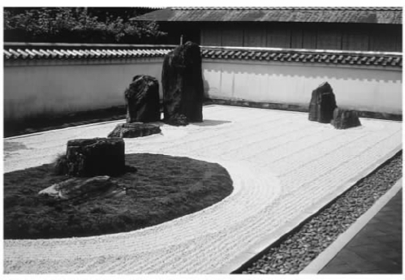
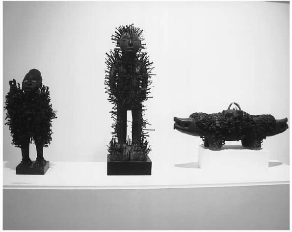
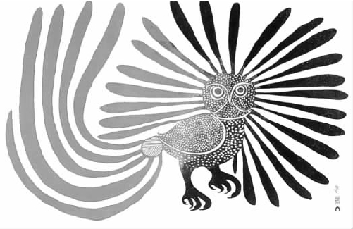
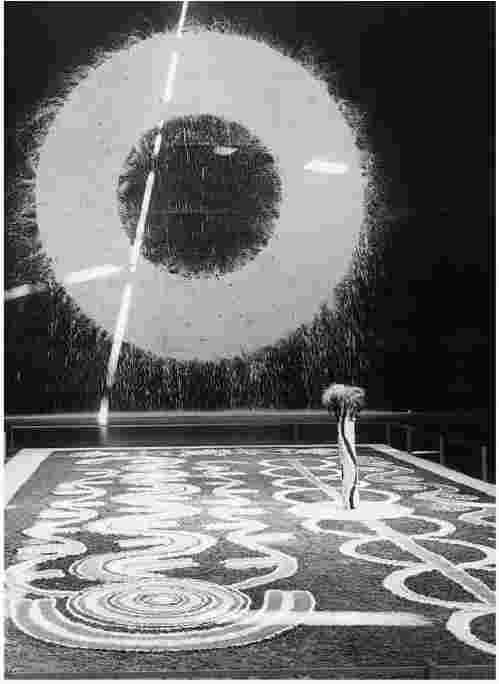
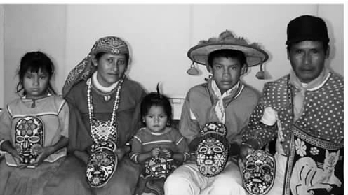

艺术在不同的历史背景下采用了各种各样的形式。我们承认和尊重过去的许多艺术形式，例如悲剧——尽管它们的欣赏背景也许不同了。但是一些过去的艺术作品看起来似乎很陌生。今天的西方很少有像法国17—18世纪时那样复杂而具有象征意义的花园。染色玻璃对于营造夏特尔大教堂的辉煌效果非常重要，它今天更多与手工艺而非艺术有关。景观园艺今天更像是一种业余爱好或设计实践而不是“艺术”。也许我们应当像考察艺术和自然景观的关系一样来考察我们对手工艺和艺术之间差别的想象。
对于日本的读者来说，花园也许是一种活的艺术形式。凡尔赛宫象征着国王的权力，但是一座禅宗花园象征着人与自然和更高真实的关系。在西方人看来，日本人的花园更“自然”一些，花园里有树、岩石、弯曲的小径、池塘和瀑布，但这一切都是有意营造的。禅宗的茶道由微妙的、和谐的、宁静的价值观所引导，从花、窗帘、陶器的选择到烹茶和上茶都受其影响。日本艺术的艺术形式——诸如盆景树，插花和长满苔藓、四时更替的花园（像东京的弘徽殿）——同样也渗透着神道教的教义。

图8 日本的一座禅宗花园，耙过的石子和细心摆放的陡峭漂石引人沉思。
一些禅宗花园中的山石和裸露平铺的石子会让西方人感到迷惑。那些陡峭的巨大山石在中国也被认为是值得称颂的，由于它们具有象征性，它们经常被人花大价钱搬到古代的花园中去（甚至移到上海的现代摩天大楼中去），中国的花园通常包括一座可以进行文人式的思考和调养的建筑。皇帝游乐的宫苑圆明园以桥梁和楼台为特色，这些桥梁和楼台建造于宏大的人造景观（但看上去很像自然景观）之中。有关“远东”园林的报告于1749年开始在欧洲出版 [1] 以来，对西方产生了重要影响。相比之下，凡尔赛宫必定显得太过死板和规整了。那些具有更多随意性的英国园林显示了来自中国的园林报告的影响。
文化像人一样向外流动。从悉尼到爱丁堡再到旧金山，都有中式的花园和禅宗花园。“世界音乐”空前流行，最新的迪斯科风格轻松地将弗拉曼柯音乐和爵士乐、盖尔人的传统音乐相结合，非洲和南美洲的舞蹈团定期进行海外表演。人们将不可能摆脱意大利西部片、日本武士电影、好莱坞动作片、印度冒险故事和香港电影所产生的一连串影响。在现代世界中，没有什么“原始”、遥远的文化能独立存在。墨西哥山村里的惠乔尔人（印第安人的一支）为采集无刺仙人掌而制作的面具和献祭碗所用的玻璃珠子是从日本和前捷克斯洛伐克进口的。
艺术能突破各种文化之间的障碍吗？约翰·杜威认为是可以的，他在1934年的著作《艺术即经验》中写道：艺术是最有可能通向另外一种文化的窗口。他坚持“艺术是一种通用语言”的说法，鼓励我们试着去获取另一种文化的内在体验。他认为这需要直接面对艺术，而不是去研究地理、宗教和历史等“外部因素”。他说：“当我们走进黑人或波利尼西亚人的艺术精神当中的时候，文化障碍会消除，狭隘的偏见也会烟消云散。这种不知不觉的融会比通过论证所产生的改变更有效，因为它直接进入了另一种文化态度。”
杜威认为，“希腊人、中国人和美国人的审美素质都是同样的”，这种信念表明他想将我们的艺术体验神秘化为一种无言的直接欣赏。这有点像是一位现代主义者寻求“美”的某种普遍形式特征。实际上，艺术批评家克莱夫·贝尔也强调了“原始”艺术中的有意味的形式而不是特定内容的价值。但是将杜威的方式和贝尔的理论放在一起是不公平的，因为杜威知道“必须掌握艺术的语言”。他没有说艺术就是美或者形式，他的说法是艺术是“社群生活的表达”。尽管我将比杜威走得更远，我还是喜欢这一定义。我要说的是，为获得欣赏另一个社群的艺术的“内在”态度，我们必须先了解“外部”因素。
例如我对于非洲尼基西·恩肯迪神偶雕像的直接体验源于刚果的卢安果。这种雕像上有着许多竖起的钉子，看起来十分凶猛——就像恐怖电影《猛鬼追魂》系列中的钉头鬼。当我了解了它的“外部因素”——这种钉子是长期以来由那些签署协议或密封争端解决方案的人们钉入的时候，我的最初感知得到了修正。参与者是为了寻求对协议的支持（期待破坏协议的人会受到惩罚），人们认为这种神像是很有神力的，因而它们常常被放在村子外面。尽管我也许直接察觉到这些雕像体现了可怕的力量，但是在没有理解如何以及为什么制作它们等其他情况之前，我并没有理解它们的社会意义。雕像的最初使用者可能会觉得这些小组雕像在博物馆的非洲馆里集中展出显得很奇怪。
我们很难反对杜威鼓励人们保持一种诚恳态度去面对其他时代或文化中的艺术的企图。我并不是想说在没有了解更多情况之前我们就不能去欣赏钉满钉子的神像的力量，但是外部知识能有效地加深我们的体验。背景知识也能帮我们提升对其他艺术形式的体验，比如说能使我们去欣赏雷盖 [2] 配乐歌曲、福音音乐、巴赫的弥撒音乐后面的宗教意义。在本章我将更进一步讨论一些问题，即文化背景、文化互动如何影响我们对艺术的各种文化表现的理解。
通常人们很难理解在其他文化的艺术中被重视的东西及其被重视的原因。非洲的面具、木雕和印第安祖尼人的神像、印度教的古典舞蹈一样，都是宗教庆典的组成部分。对我来说，伊斯兰陵墓和清真寺中的书法看起来像一种漂亮的装饰，但是它们具有被我所遗漏的含义，因为它们书写着选自阿拉伯文的《古兰经》中的韵文，而我读不懂这些。此外，一位中国的绘画大师以“胸有成竹”的方式巧妙地绘制竹子，当我观看这些看起来很简单的水墨画并探求其更深层的形式或意义时，我被难住了。

图9 在曼尼私人收藏博物馆的藏品中，这三件尼基西·恩肯迪钉神雕像都是所在村庄或地区公正的有力保证者。
不同文化常常通过模仿、购买、大规模的市场销售等限制交流的方式互相接触。即使是那些诚心想理解异域文化的仰慕者也会受到旅游业的影响。当西方人收藏非西方的艺术或到博物馆观看它们的时候，他们或许将许多作品的原初背景都忘记了。忽视它们的背景能导致文化掠夺——从“新奇”的文化中收集艺术品就好像收集战利品一样。最近我从邮件中收到一份商品目录，上面提供非洲西部阿散蒂人的面具、摩洛哥的鼓饰、不丹的背心、旁遮普的钱包、巴厘岛的衣服挂钩、顶上装有佛像的橱柜、风水肥皂，此外还售卖盆景。
“原始”或者“新奇”的艺术常常存在于我们自己的国家之内，并没有跨洋隔海那么遥远。在圣菲举办的美国美学协会会议期间，有一个多姿多彩的印第安村庄舞蹈展示。当舞者扮作水牛、鹰和蝴蝶表演的时候，年长的特瓦人安迪·加西亚解释了它们在美国本土文化中的宗教意义。尽管我们可以从加西亚先生的介绍中对其有所了解，但是对于这些“本土”的舞蹈我们还是很“老外”。他的唱词奇怪而啰唆，那些舞者看起来也面无表情，他们上身僵硬，做着程式化的手臂运动。我被他们漂亮的服饰（柔软的动物皮皮靴、插着鹰和鹦鹉羽毛的显眼的帽子、做工精细的银耳链、绿松石镶花的宝石、叮当作响的脚踝上的系铃）吸引住了而没有仔细欣赏他们跳舞。

图10 凯侬贾克·阿舍瓦克的版画作品《被施了魔法的猫头鹰》，该作品既反映了因纽特人的图样传统，又体现了加拿大北部对日本版画制作技巧的吸收。
许多本土艺术从殖民统治时期表现出许多文化互动的复杂历史中显现出来。有一个比较特殊的例子，是有关加拿大的北方妇女是如何学会了制作版画的。艺术家詹姆斯·休斯敦被政府聘请，他的任务是将本地的手工艺当作一种谋生手段进行推广。因为他的努力，版画今天已经毫无疑问地成为因纽特人的艺术形式。詹姆斯将日本版画的制作技巧介绍给当地人，鼓励妇女们将她们的背心和靴子的传统刺绣技巧用于生产更有市场的版画。新时代的人们在美洲土著当中找到了宇宙和谐的模式，在这场时髦的运动中，“真正”的美洲土著被找了出来，不管是在加拿大的卡普多塞特还是在亚利桑那州的祖尼人聚居地或是墨西哥的奇琴伊察。圣菲的许多画廊都展出漂亮的（同时也是昂贵的）印第安村庄的陶器和雕成克奇纳神的小木偶，但是也有数不清的劣质画，这些画都画着越过平顶山凝望夕阳的奇异的印第安少女。在举行特殊仪式的时候，一些印第安村庄挤满了旅游者，但是另外一些村庄是对公众禁止的，不允许摄像和摄影，村庄里的人们通过这种措施来阻止商业行为和对神灵的不敬。
尽管各种文化之间有鸿沟，但是文化间的接触却历史悠久。古希腊的艺术受到埃及狮身人面像、锡西厄人的金工制作、叙利亚的爱情女神像、腓尼基人的钱币设计的影响。即使是“日本的”佛教禅宗美学也反映了日本文化和佛教（从印度经中国和朝鲜传播到日本）这一新的外来宗教之间长达几个世纪的历史性互动。伊斯兰文明中各种文化之间的接触提醒我们，种族多样性和文化多元主义不是我们这个世纪才有的新事物。中国9世纪出口的陶瓷器迎合了在早期穆斯林统治者中流行的审美趣味。西班牙的科尔多瓦是13世纪时的一个多国贸易中心，西班牙的穆斯林艺术家制作的陶器被画上十字架后出口到北方信仰基督教的购买者之中，就像波斯制造有纹章图案的纺织品和地毯是为了出口到欧洲的城堡中去一样。这种文化互动的支脉很复杂。也许最著名的“土耳其风味”的艺术形式——伊兹尼克瓷片反映了奥斯曼帝国的统治者对于中国瓷器的巨大兴趣，这些瓷片从中国艺术中借用了牡丹、玫瑰花、龙、凤凰等设计图样。
很难在文化联系中清楚地区分好的联系和坏的联系。亚洲艺术在好多个世纪中对西方产生了深远影响。这些借鉴中的一部分象征着欧洲长期以来将东方奇异化的倾向，但是另外的部分反映了文化之间重要的横向滋养。中国瓷器不仅被波斯的瓷艺家所模仿，也被意大利的锡釉陶器制作者、代尔夫特的陶器生产商和英国的骨瓷设计者所模仿。19世纪后期在巴黎举办的远东展览上展示的日本的水印版画对马蒂斯、惠斯勒、德加的构图和色彩产生了影响。“东方的”音乐样式影响了莫扎特、德彪西和拉威尔之类的作曲家。普契尼的《中国公主图兰朵》是以来自波斯的阿拉伯《天方夜谭》的故事为基础而创作的。此外，根据最近在欧洲出版的材料，普契尼在这部歌剧中采用了七支“真正的”中国曲调。奥利维尔·梅西昂充满特质的配器和和谐感是基于对南亚音乐样式的广泛研究之上的，戏剧导演和舞台设计师罗伯特·威尔逊在瓦格纳歌剧（如《帕西法尔》）中的舞台设计引起了争议，他将技术性的激光魔术、灯光表演与日本能剧中阴森的步态、姿势以及简单明了结合在了一起。
尽管我们尽最大努力去理解另外一种文化中的艺术，殖民态度也许还会悄悄混在我们的意识之中。在澳大利亚北部凯恩斯附近的库兰达，有一些摆小摊的小型艺术品市场，许多土著艺术家在那里出售他们的物品：迪吉里杜管 [3] 、绘画、动物雕刻、饰有花纹的回飞棒。我从一位看起来特别像本地土著的男人——布恩嘎先生手里买了一幅画着澳洲肺鱼的小画，布恩嘎先生长得很高，皮肤黝黑，长着一头白发，显得神情愉悦。他解释说在他的部落中，只有来自某一家族的人才能捕捉和烹调（美味的）澳洲肺鱼，在一些群落中，只有某几个人才拥有描画它的权利。当他拿出一些照片和他在法国和比利时举办巡回展览的剪报时，这种与“原始”艺术的接触使我感到吃惊。当我在库兰达的文化中心观看土著人的群体戏剧表演时也有同样的感触，他们（就像印第安村庄里的特瓦人舞者一样）穿着传统服装，在迪吉里杜管吹奏的听起来很奇怪的音乐中生动地表演他们的故事——模仿古代一位英雄被谋杀和重生的情形。在结尾的时候，那位主演走出他扮演的角色，当时他身上仍然穿着狮皮衣服、保留着文身。他露齿一笑，说了声“大家好”，然后鼓动观众去礼品店购买录制有他们音乐的光盘。我个人狭隘的期望使我大吃一惊，好像是他而不是我不得不继续陷在过去的文化之中似的。
文化借鉴是1984年和1989年举办的两个重要博物馆展览的关注焦点，这表明在西方人试图拓宽“艺术”门类时，思考和展现这种文化艺术间的接触是多么具有争议性。
1984年在现代艺术博物馆举办的名为“‘原始主义’和现代艺术”的展览对“原始”一词持怀疑态度，因此标题中使用了引号。然而，批评家写道：这个展览对其展示的非欧洲艺术造成了伤害。为了表示对“原始”艺术的赞扬，展览举办者展示了原始艺术是如何影响了毕加索、莫迪里阿尼、布朗库西、贾科梅蒂和其他的欧洲现代艺术家的。由于这个展览没有注明相关的艺术家、创作时代、文化或原初用途等信息，将“原始”艺术与文化历史背景割裂开来，所以所有能看到的东西只是外观或形式。批评家托马斯·麦克艾维利写道：
与此相反，1989年在蓬皮杜现代艺术中心举办的名为“大地魔法师”的展览希望以同等的尊重来对待所有参加展览的艺术家。它将每一位艺术家的文化历史背景都纳入其中。但是，同样也有抱怨，批评家认为这次展览对待那些完全不同的作品太过于平均，例如：将理查德·隆创作的地景装置作品《红土圈》悬挂在由澳大利亚延杜穆地区土著艺术家集体创作的地画之上。非西方的艺术依旧没有在西方观众面前充分展示它们的文化背景。很难否认这次展览的标题有一种隐藏的新时代神秘主义的味道，标题有种对“真实”灵性和原始宗教权威的渴望，主办者想以此逃避一种粗糙的、卑躬屈膝的艺术市场体系。
更多新近的博物馆展览已经开始提供更多的艺术背景。（这些措施有时搞笑到了荒谬的程度，比如当旧金山现代艺术博物馆为老师和学生们介绍非洲艺术的时候，严肃地宣布博物馆正在展出不应归入任何一个博物馆的展品。）语音设备控制着参观者的步伐和驻足观看的时间，博物馆提供越来越长的墙上文本、分类文章、预览讲解和讲解员。接下来不可避免的是，在礼品店中出现了玩具、玩偶、明信片、招贴、音乐磁带、日历、耳饰甚至垃圾袋。很难说一个精美的垃圾袋是一种文化理解的象征！
高层次的伊斯兰艺术不仅包括书法，也包括钱币和地毯。

图11 1989年在巴黎举办的“大地魔法师”展览中的一件装置作品，理查德·隆创作的土圈悬挂在墙上，下面是由澳大利亚延杜穆地区土著艺术家集体创作的地画。
像茶具一样，剑在日本长期得到高度重视并按照禅宗的审美原则精心设计。澳大利亚土著的回飞棒、爱斯基摩人的皮船、非洲约鲁巴人的“孪生”木偶，这些都是通常被归于“手工艺品”的另外几种艺术品。当然，我们今天在博物馆里看到的许多西方艺术——希腊的陶罐、中世纪的箱子、意大利的锡釉陶器、法国的挂毯——同样存在上述的情况。甚至米开朗琪罗和多纳太罗的雕塑都被赋予了装饰公共空间、教堂和陵墓的任务。许多参观夏特尔大教堂的游客对那些使教堂具有审美整体性的中世纪的信仰体系没什么了解也谈不上什么尊重。如果称一座禅宗花园是艺术品，其原因也许与康德说凡尔赛宫是艺术品的原因不同；你不必称禅院为你感觉中的艺术品，以此来对院中的修禅者表达敬意，那样你也许会表现出你的狭隘和无知。
全球的各种文化真的共享一种“艺术”观念吗？理查德·安德森（一位将研究集中在艺术方面的人类学家或者“从种族出发的美学家”）通过对全球十一种文化进行研究后，在《卡利俄珀的姐妹们》这本书中提出我们能够 发现所有文化中的艺术都有一些类似之处，某些东西因为它们的美、美感形式、创作技能而被欣赏，即使是在不体现功用的领域它们也被珍视。安德森的研究没有局限于当代文化，例如：他注意到阿兹特克人仰慕并收藏他们前辈——托尔特克人和奥尔梅克人的艺术作品。安德森提出将艺术定义为“有文化意味的意义，被巧妙地编入了动人且具有美感的媒介”。我会认可这种定义，我认为约翰·杜威也会接受它，安德森的定义听起来像是对杜威提出的理念的具体化，杜威认为艺术“表达了一个社群的生活”。
即使是在通过仔细和充满敬意的研究之后，我们对于什么是“有文化意味的意义”还是搞不太明白。另外一位人类学家詹姆斯·克利福德将英国哥伦比亚现代艺术博物馆的图腾制品展览当作现代艺术家的抽象雕塑，与其在西北海岸印第安画廊的展览进行并置研究。当重要的宗教物品被送回部落时，人们对于怎样展示这些物品有着不同意见。一部分人认为这些物品根本不应该展出，另一部分人认为应该把每一件物品单独展出并附上解释，然而还有一些人认为应将其放在一种典礼的背景中，重新创造一场“夸富宴”，按照传统它们就是在这样的背景之下被使用的。
人类学家甚至常常会对他们所研究的文化中的艺术生产产生影响。当国际艺术市场“发现”土著艺术的时候，美国人埃里克·迈克尔斯正在研究澳大利亚20世纪70年代晚期的土著人群。土著人的圆点画和西方的欧普艺术 [4] 或抽象表现主义相似，但是这些艺术家的真正目的是创造一种“微微发光”的效果以求唤起原来的“梦幻时代”或者与其建立某种联系。迈克尔斯认为土著艺术家与欧洲艺术家相比，对创造性与所有权有完全不同的看法。但是，
艺术家们突然获得了对他们作品的需求，因而倍受鼓舞，他们还承担了一些大型项目的创作。迈克尔斯本来不想加以干涉，但是，当一个集体创作的大型艺术项目“银河梦幻”开始受到一位曾经离开本地的艺术家的影响并开始使用帕滂亚部落的点绘风格时，他的关注度增加了。因为过多的圆点使人弄不清作品所描绘的故事中的中心人物是谁，迈克尔斯担心金钱可能会对这样一种“混合”风格产生影响，他就此对其中一位年长的艺术家评价说，“欧洲人在看到这幅画时也许会很迷惑”。后来经过讨论，这些人将那个反常的部分修改得平常易懂了一些。

图12 尤文蒂诺·科西欧·卡里罗是一位来自墨西哥的惠乔尔人艺术家，他和他的家人组成一个团队进行传统的缀着珠串的面具的制作。
人类学家苏珊娜·伊格·瓦拉德斯也干涉过部落文化中的一种艺术生产。当她1974年去墨西哥西部研究印第安人中的惠乔尔人的时候，她惊异地发现他们的传统艺术由于与新符号结合而遭到破坏：在妇女们精心制作的刺绣品上出现了米老鼠和大众汽车的商标，这些代替了原来的蜂鸟和玉米。她劝说他们坚持原来的传统图形。即便如此，很贫穷的惠乔尔人还是为了迎合正在增长的市场需求而调整了他们的艺术品的内容。当地的文化艺术中心方便了他们与瓦哈卡木雕工的接触，这使他们新的艺术产品不再局限于原来那种装饰着珠子的祭祀碗。瓦哈卡人把雕刻好的猎豹头和其他动物雕刻卖给他们，让惠乔尔人来镶珠子，这样双方都能获利。惠乔尔人的传统艺术形式反映了另外一种重要的外来影响，这种影响来自一位达拉斯的收藏家，他认为更圆的珠子也许会使艺术品的设计更加完美。1984年，他用船把珠子从日本和前捷克斯洛伐克运进来，惠乔尔人喜欢这种新的珠子，他们马上将其恰当地运用到了碗和其他雕刻品的装饰上。
一些美洲土著现在面临着一个与艺术家的作用和机遇相关的艰难决定。在艺术学校接受教育的年轻人和今天的其他任何学生一样熟悉最近的全球艺术运动，他们在从事与传统艺术风格、主题和材料相关的艺术创作时，可能既感受到责任同时也会有一定的压力。如果21世纪的“原始”艺术家应该脱离历史潮流而去为其他人珍惜某种神秘的过去，这是个沉重的负担。
今天美洲和澳大利亚的土著在文化上没有被孤立和同化。同时在第一世界的主要城市中心也有来自不同种族和文化的人，这反映出许多文化的相互影响和种族间的相互关联。接下来我想谈论在新的文化交流中出现的两个问题。
我们在前面已经读到后殖民的态度如何能在博物馆的展览、旅游市场和贸易对本土生产的影响等方面表现出来。20世纪的艺术实践反映了全球许多国家从殖民统治下取得独立。这从来不是一个顺利的过程，常常会包括多年的流血革命。独裁者和其他政治势力常常压制艺术，因为艺术会提供批判性的抵抗观点并通过唤起文化的根源建立一种新的国家身份。
在20世纪可以看到许多例子证明艺术发挥了强有力的政治作用，它们经常遭致激烈的报复和政治审查，甚至死亡（或死亡威胁）。许多杰出的作家是在狱中或流放中创作作品的。萨尔曼·拉什迪因为他的著作《撒旦诗篇》而被人下达了死亡令，这是个广为人知的例子，展示了后殖民时代的复杂争端。拉什迪是一名生于印度而移居伦敦的人，他用殖民统治者的语言——英语写作。他那篇幅巨大，内容丰富（而且艰深）的著作将伊斯兰教和印度教的神学典故与当代社会批评（来自印度和英国）相结合，其中穿插着魔幻现实主义的场景：人们从爆炸的飞机上跌落到地上却没有受伤，突然长出角和尾巴，穿越时间，在蝴蝶的引导下去朝圣。
某些表现先知穆罕默德和他妻子的讽刺性片断使得一些穆斯林感到震惊和愤怒，这和塞拉诺的《尿浸基督》对许多基督徒的冒犯很相似。对拉什迪的死亡令（现在被撤销了）令人感到遗憾，但是它不应该仅仅被理解为是一种比西方的自由言论审查更为严苛的审查制度。这一威胁超越了国界和组织，反映了伊斯兰律法的适用范围和独特本质（就像某一位毛拉 [6] 所解释的那样）。在这里我们看到了拉什迪复杂的后殖民和后现代文学风格与伊斯兰宗教激进主义现象之间的激烈冲突，这使人回想起和当代国家形态相矛盾的早期帝国时代。这种现象涉及复杂的争端：伊斯兰世界的长期分裂、国际石油经济的地缘政治和前苏联解体期间变幻的国家联盟。
这引起了我的第二个问题，涉及“飞散”混血人的问题。“飞散”主要用于描述自公元前6世纪耶路撒冷的所罗门圣殿被破坏以后，开始四处流散的犹太人的生存状态。以非洲人为奴隶的三百年导致了另外一种更大规模的“飞散”，其他类型的殖民统治和政治实践也引发了类似的情况。“飞散”对艺术生产产生了一种新的影响，这部分得益于全球的远程通讯。在失去祖国期间能够将一个社群结合在一起的常常是人们的文化传统，其中包括宗教仪式，还有舞蹈、歌唱、讲故事、绘画等活动。
当人们被迫（或者自己选择）在全世界迁移的时候，他们的后代以一种新的混血身份出现。许多移民将他们的文化传统保持了很多代，其中艺术起到了一个关键性的作用。在婚礼和其他庆典上，人们穿上传统服装，使用自己传统文化中的舞蹈和音乐。意大利人在波士顿的旋转舞、印度人在伦敦的班戈舞（表现耕种和收获）以及中国人在旧金山的春节游行都反映了这种情况。“飞散”文化也在新媒体上出现，美国有线电视播出了西班牙语频道“联合电视”和“全球电视”，它们制作了充满吸引力的“肥皂剧”。此外，也有播放伊朗和印度音乐电视的电视台。
20世纪80年代出现了身份政治意识的觉醒，当时许多具有混血或“文化归化”身份的青年运用艺术来探讨种族主义和文化同化的问题。非裔美国艺术家米歇尔·雷·查尔斯使用了旧杂志和广告上黑人的固定形象，引起了黑人和白人观众的共同关注。韩裔美国人戴维·钟在华盛顿特区的一个黑人聚居区做了一个装置，再现了他祖父便利店的旧貌，从作品的窥视孔和录音磁带中传递出来自两边的种族猜疑。
许多电影有效展现了后殖民政治和“飞散”混血人的问题。斯派克·李的《为所应为》突显了在现代城市不断改变的时候种族和民族之间的紧张关系。哈尼夫·库雷西的《郊区佛陀》描述了一位印度的年轻人在伦敦的成长历程，颇有讽刺意味。《战士奇兵》和《哭泣的游戏》反映了新的不断发展的政治、种族和性别的力量变化，分别涉及新西兰的毛利人和英国的爱尔兰人、黑人和英国人。
另外一个例子是米拉·奈尔1991年拍摄的电影《密西西比风情画》，影片描述了一个跨人种的爱情故事，故事发生在美国南部的一位非裔美国人和一位印度女子之间。影片的种族背景因为一件事而变得复杂，那就是由于乌干达的独立，那名女子的家庭被迫从原来所在的社区迁移出去——这些印度人最初是由于英国殖民统治者把他们带到那儿修铁路而居留下来的。奈尔的电影描写了这对年轻人爱情生活中的困境，这些困境是由各个种族群体的期望和偏见以及周围更大的文化环境所造成的。
我最后关于后殖民政治和“飞散”混血人的两个观点和约翰·杜威相信在艺术中存在一种通用语言有何关系？在一个政治局面不稳定、个人身份变化复杂的时代，即使是来自一个国家、民族或文化的艺术家也会在评价艺术中的意义和价值的时候遇到困难。一个关键因素是在一个常新常变的世界环境中许多人还将表达我们（作为市民和个体）所面临的基本问题当作艺术的至关重要的方面。当我们认识到社群是内在多样并不断发展的时候，我们仍然可以说：约翰·杜威的看法——“艺术表达了一个社群的生活”是有道理的。
杜威对于艺术的评论和阿瑟·丹托的艺术理论（在第二章结尾描述过）相似。杜威认为我们必须进入相关社群的精神层面才能了解某种艺术的语言。丹托辩解说：不管特定文化将什么东西从理论上概括为 艺术，艺术家能使什么成为艺术取决于一个特定时代和文化中可能存在的艺术目的的背景。丹托设想所有文化中都有一个类似艺术世界的东西，人们还在其中对艺术进行了实际的“理论概括”，在这一点上他也许运用了过于现代的西方“艺术”概念。最基本的问题是，如果人们赋予某种有媒介美感的物品以意义，这是否就等于它在某个“艺术世界”中拥有了一种“理论”？对此，丹托会说就是如此。为了说明他的艺术观念如何能运用于各种文化之中，丹托想象那些罐子和篮子的制作者会在自己的文化背景下区分艺术和器具，以此来进行“理论概括”，也许他们会将罐子看作是实用的而将篮子看作是艺术的。但是丹托的批评者争辩说，在某些文化中人们完全看不出这种区别。
通过对照发现，杜威的艺术观点看起来视野更开阔、更开放。它与人类学家理查德·安德森对于艺术的描述——艺术即“有文化意味的意义，被巧妙地编入了动人且具有美感的媒介”产生了共鸣。但是我给这种解释增加了一些细节上的限定，那么让我来评价一下三个关键性的观点。
首先，杜威建议我们直接体验另外一种文化中的艺术，这看起来很吸引人，但实际上却过于简单。由于艺术是态度和见解的一种深刻表达，与另外一种文化中的艺术进行交流能 帮助人们理解另一种文化。但是我们通过所谓的直接体验，无法理解艺术和文化本身。掌握杜威所说的“外部因素”能加深我们的艺术体验。
第二，在某种文化或在这种文化的艺术中可能不只有“一种”观点。尽管艺术可以表达某种文化的价值观，但不存在完全同质的文化或没有被世界其他文化所影响的文化。即使看起来最单纯的文化价值观的范例也常常是文化间复杂作用的结果。和非洲一样，爪哇岛的舞蹈也受到本地社群的历史运动和最近的殖民压迫统治的影响。艺术过去一直被文化交流所影响。这可能会导致模仿，最初的模仿看起来既粗糙又缺乏独创性，可是后来可能发展成为一种不同的艺术形式，就像伊兹尼克瓷片和因纽特人的版画制作一样。
第三，来自其他地域和时代的艺术形式并不总是符合我们的当代艺术标准，这种标准是针对在画廊中展出的和表达个人意图或“天才”的作品而设定的。艺术品也许是实用的或者是精神性的，或者两者都是。它们或许只有在仪式和庆典等背景中才有价值。艺术可以是集体创作的。它可以是一座花园或一次茶道表演、一支回飞棒或装种子的一个罐子、祖先的一个面具或一条独木舟、一座陵墓或一枚钱币。安德森的定义——“……意义，被巧妙地编入了动人且具有美感的媒介”看起来包含了所有这些不同的对象。
在这一章中我强调了世界范围内文化的长期互动以及它们对于艺术生产的巨大影响。那么，当我们听到这么多关于新的“地球村”的看法时，今天的艺术又有什么不同（如果有的话）？一个主要的不同与新媒体和远程通讯的作用有关，这一点我将在后面的第七章进行探讨。另外一个重要影响来自高度发展的国际艺术市场，这是我们第四章的主题。